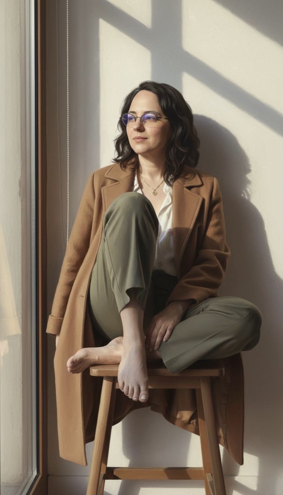
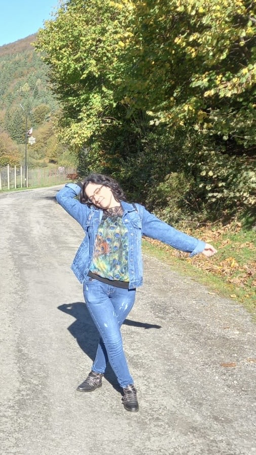

Am ajuns la o vârstă la care cele mai multe prietene își serbează nunțile. Eu? Eu am o colecție impresionantă de amintiri de la nunțile lor și un sertar plin de viziunea unei rochii albe... care nu s-a materializat niciodată.
Știu că nu sunt singura. Am visat la Marea Iubire, la un parteneriat trainic, la o familie și - da - la acea zi în care toate privirile ar fi fost ațintite asupra mea, mireasa. Am așteptat. Am sperat. Dar, cum se întâmplă uneori în viață, planurile noastre nu s-au potrivit cu realitatea.
Uneori, când realizez că această etapă a vieții nu se va mai întâmpla, mă apucă o disperare surdă. E o durere reală, o **durere a lucrurilor care nu au fost**. E firesc. Nu e doar despre a avea un soț; e despre a nu fi îndeplinit un vis cultural și personal profund - acela de a fi soție și mamă. Cine nu și-ar dori să știe că a fost iubită, aleasă, pentru totdeauna?
Dar ce se întâmplă când visul nu se împlinește? Aici intervine decizia cea mai importantă: **rămâi blocată în ceea ce nu este? Sau construiești pe ceea ce ai?**
Am început să înțeleg că a fi "mireasă" nu e o stare rezervată doar pentru o zi. E o stare de a fi *prețuită*, de a *celebra* viața, de a fi *protagonista* propriei povești. Nu am găsit bărbatul care să mă iubească, dar am descoperit că mă pot iubi pe mine.

Am transformat rochia albă simbolică în libertatea de a călători, de a învăța o limbă nouă, de a mă dedica pasiunilor mele. Am transformat golul din brațe în loc pentru cărți, pentru un animal de companie, sau - pur și smplu - pentru a mă îmbrățișa pe mine.
Draga mea, dacă citești aceste rânduri și simți că te regăsești în ele, vreau să-ți spun ceva: **Ești mireasa propriei tale vieți!** Ești cea care alege unde mergi, cu cine îți petreci timpul și cum arată fericirea ta.
Dacă nu te-a ales nimeni, alege-te tu! Fă-ți cadou o zi în care să te tratezi regește. Poartă acea rochie elegantă pe care o păstrezi pentru ocazii speciale. Încălzește-ți inima cu cei dragi (asta în cazul în care ai oameni care te iubesc). Viața ta nu este o repetiție; este un eveniment principal, chiar acum.
Acceptarea nu înseamnă resemnare. Înseamnă a onora durerea, a o așeza cu blândețe deoparte și a continua să trăiești. Adevărata iubire de sine nu așteaptă un inel. Ea **este**.

Așa că, data viitoare când te apucă disperarea, amintește-ți: **nu ai ratat o viață; trăiești o viață diferită, dar la fel de valoroasă.** Și asta, la rândul ei, este o nuntă frumoasă. ✨
Am pregătit un Joc Interactiv de tip: ”Decizii și Autodescoperire”
Încearcă-l Acum!